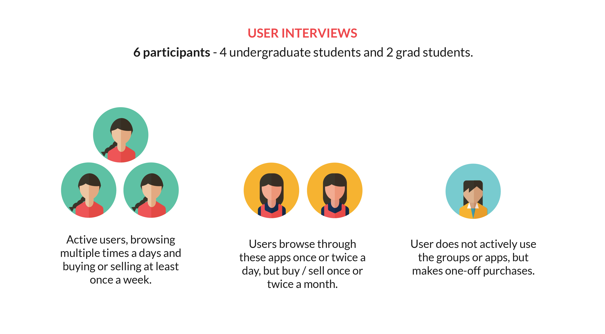
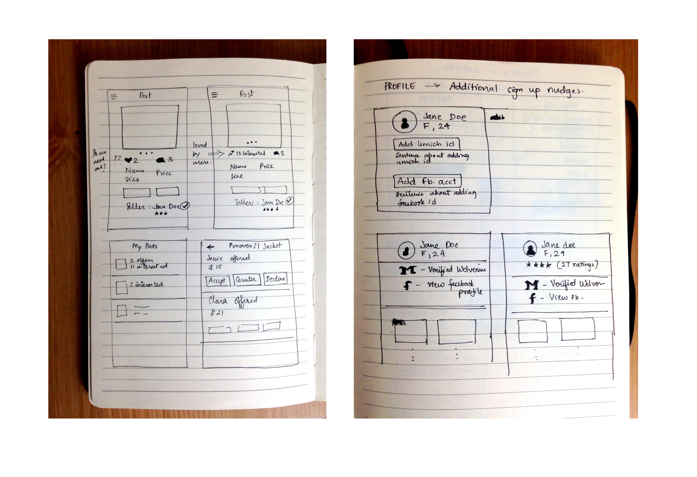
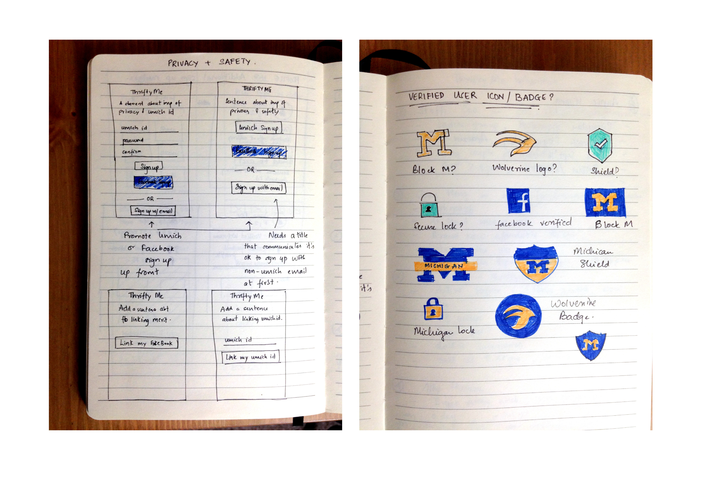
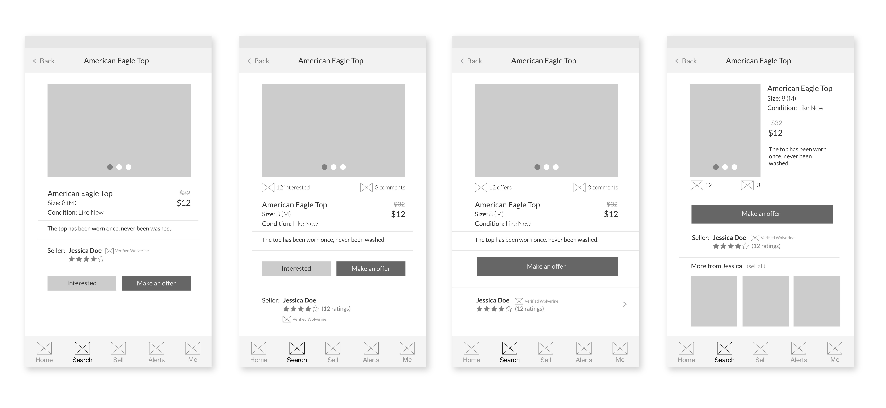
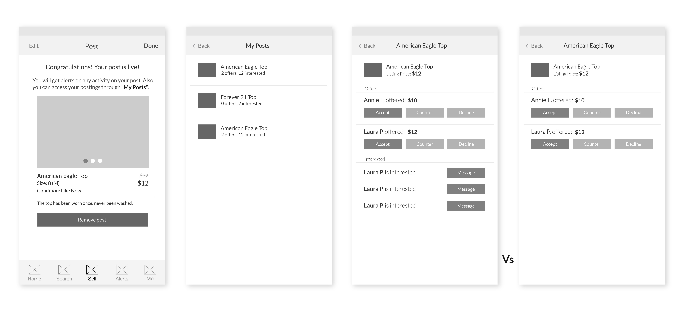
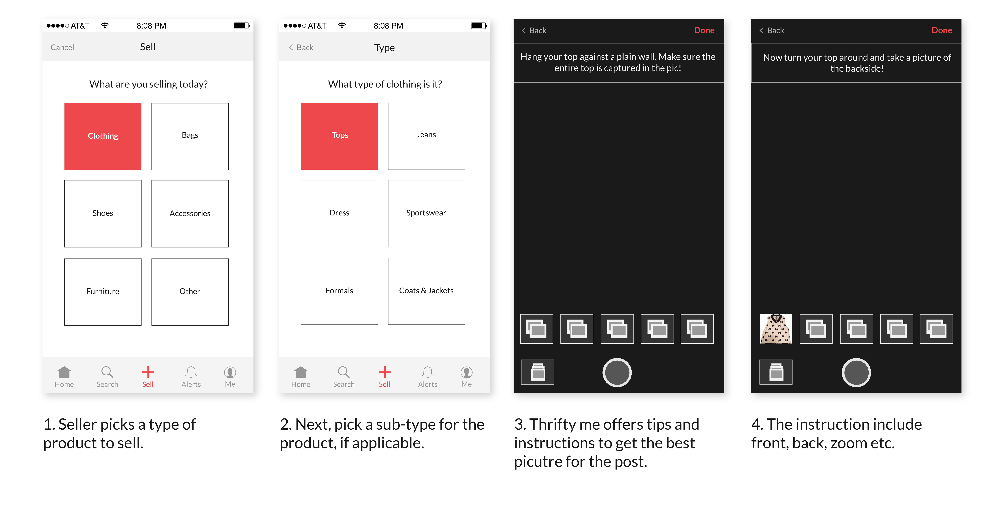
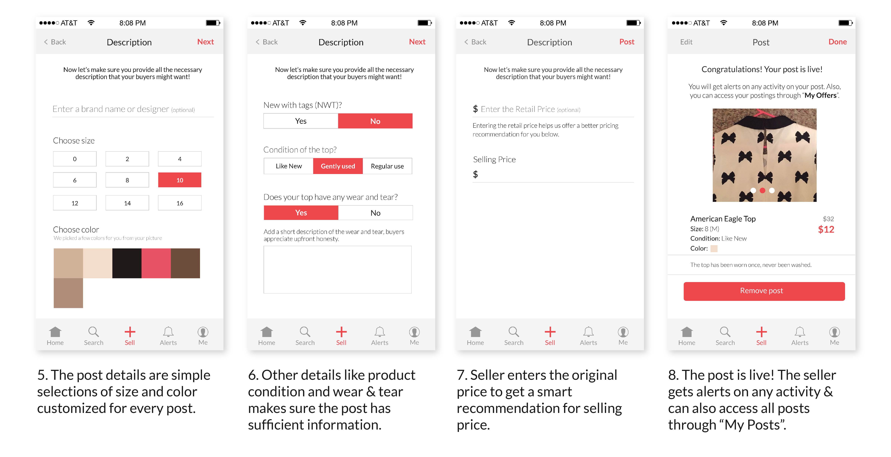
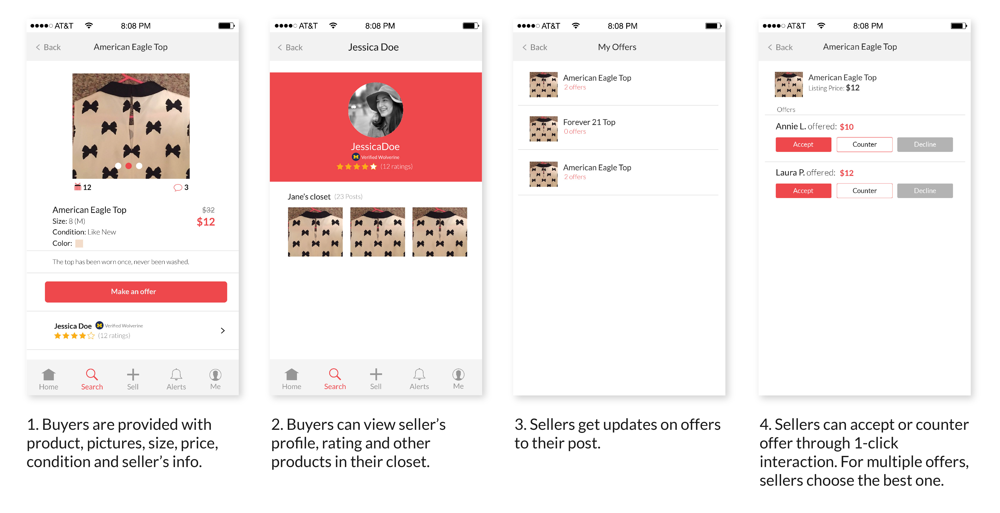
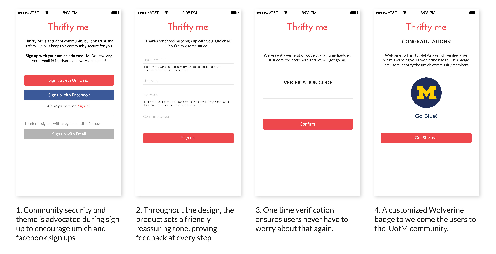

Thrifty Me Mobile App
Role
Interaction and Visual Design
Team
Jaee Apte
Client
University of Michigan
Timeline
September 2015 - December 2015
Problem
Every year Ann Arbor, being a college town, sees a huge student crowd incoming and outgoing.
When I moved to Ann Arbor, settling in was tough. It was a new country, high standard of living, everything was expensive and I was
already in student debt. I didn't own a car to drive around thrift shops, didn't know any seniors to give me hand-me-downs and the
free-and-for-sale groups on facebook confused me! There could be a better way for students like me to shop for good quality inexpensive items
locally. Thus I spent the next 12 weeks to research all my options and design a solution to make this transition for others like me, a bit easier.
Solution
Through my research, I later discovered that privacy and hassle-free selling were areas that current solutions were inadequate in. Thus I designed a simplified selling experience and build a secure university community for the users.
The story of every student on a budget!
1. New town, new country.
2. Lack of community support.
3. Tight budget.
4. High standard of living.
5. Extremely busy schedule.
I defined the problem statement from my personal experience and the experiences of my peers. However, it was essential to get the whole picture
and validate my hypothesis with the broader audience.
"But buying good inexpensive items was hard. If I faced these problems, there could others who did too."
So I started a competitive analysis with existing solutions and reached out to a few users for a short survey. For the analysis, I looked at local facebook groups, Craigslist, eBay, Poshmark and Vinted. The survey received 35 responses in total. Through I got a general demographic of my user base, their monthly budget, expenses and spending habits.
What did I learn from background research?
1. Women more active and engaged than men. The target audience is primarily young women, mostly students, on a budget.
2. Students were found to more active on facebook groups and Poshmark over eBay or Craigslist.
3. There’s more activity around smaller day to day products like clothes, bags, shoes over bigger purchases like furniture or household appliances.
4. The students have very busy schedules, don’t find the time to visit shops. More than 50% don’t own cars, rely on public transport.
5. There was more activity on products by well known, reputed brands. Move out sales would grab most attention due to more number of items and cheaper products.
The background research helped me carve out some areas I could focus on. It also made my target user base more focused. To further understand these users and their experiences, I decided to conduct one-on-one interviews. I identified 2-3 persona types that I observed in my research and screened interested participants to get a good mix. I conducted interviews with 6 users.
I started my research with this problem: Students on a budget trying to find a good sources of used items. As I conducted interviews to validate
this hypothesis, I realized that there were several students currently using available sources just fine. However, I uncovered alternative areas
where the current mediums didn’t quite live up to. My analysis of the background research and interviews finally revealed following areas.
What did I learn from user interviews?
1. Privacy and safety play a huge role, especially for women.
2. Different users have usage behavior: Some users have something specific that they’re looking for, others are just looking out for “good deals”.
3. More users are involved in browsing and buying over selling. The overhead and hassle in selling and communicating with potential buyers puts off many users.
Since the duration of the project was 10 weeks, I decided to focus on two themes for my design solution.
1. Improving the seller's experience and encouraging more sales.
2. Privacy and safety.
Sketching solution ideas.
I uncovered following issues around selling through my research and interviews:
1. Buying is a lot easier, selling has too much hassle.
2. Users do not have time on day to day basis to go through closets and take pics.
3. Seller's posts often don’t get a good response.
4. The back and forth communication with multiple interested buyers is overwhelming.
SELLER'S EXPERIENCE.
I came up with some ideas and started sketching for a seller’s experience. I made some sketches to map out the flow of interaction from the start to the end.
Sketches help me get a good overview of the steps that would be required in the interaction. This is the place where it’s easiest for me to add or remove
some steps.


Then I moved on to wireframes to visualize my sketches at full scale.
Wireframes.
My biggest idea behind improving seller experience was to make it fast and efficient. So I tried to optimize with minimum text fields and more quick selections.
Pictures played a crucial role where buyers browsed. Thrifty me provides simple tips and instructions to help sellers take good pictures that promote their product and live up to buyers demands.
Even though the interaction was logical, this screen seemed too cluttered. A quick usability
assessment with peers confirmed my suspicion, most of them skipped a lot of the fields.
But when testing with the tags, users were more comfortable with that interaction and completed all the fields. So I broke it down to 2 screens with minimum text fields.
Finally, I designed the actual sell post to live up to the amount of information that my buyers like to get from the seller. Some information I considered crucial for the buyers: Picture, brand name, price, size, description, call to action and seller info.

The second part of the seller experience was to ease the communication between the buyers and seller. Sellers found it time-consuming to reach out to every buyer and negotiate deals. So I automated some part of that communication.
Here seller can see all offers on their post, they then accept or negotiate offers with a buyer and that line of communication gets created.

High fidelity mockups.
I created high-fidelity screens in Illustrator and set up interactions on MarvelApp. Since my target audience was primarily women 18-25 age group, I picked a feminine themed color palette. The accented color harmony of white-black-red works really well with the calls to action with this app.




Impact and takeaways.
Through my solution, I optimized the process of creating a post with custom steps and automated communication between sellers
and buyers. Thus users save time and can easily keep track of communications with potential buyers.
By encouraging a umich / facebook signup, I brought in a sense of community and belonging among the users. Through reassuring
language and constant feedback, the product makes personalized communication with the user.
I believe a solution should be designed with the product in mind, and not features. I started out with an aim to improve a buyer's interactions. However,
with the solution I eventually designed, it not only improves the seller's experience, but indirectly makes the product more appealing to the buyers as well.
Through the process of iterative user research and prototyping, my design evolved tremendously from my initial assumption. Often designers are also users
of their own design, and it's easy to lose sight of the bigger picture. User research and usability testing keeps the design process in sync with the
needs of the end user and not just the designer.